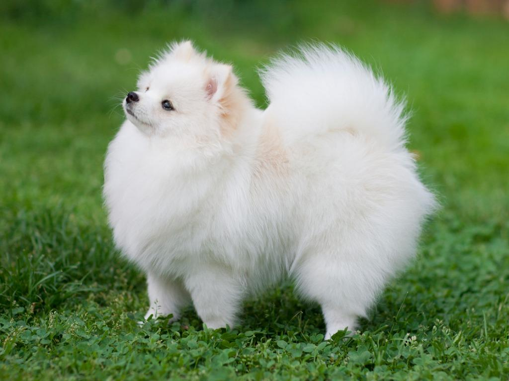

ポメラニアン

ビクトリア女王に愛された犬。 北ドイツのポメラニアン地方で、羊の番犬をしていた。 小型化されてたもので、犬名は地名からきている。 ビクトリア女王がイタリアから持ち帰り、ショーにだしたことから、有名になった。 古くから王室に愛された犬種である。
好奇心旺盛でいつもはしゃぎまわっている。 ちやほやされるのが好きで自分がかわいいことを自覚しているおり、名前が「かわいい」だと勘違いしてい る犬も一定数いる。 誰にでも愛想を振りまくが、基本的に周りの人間が自分自分の言いなりになため、自己中心的な部分もある。